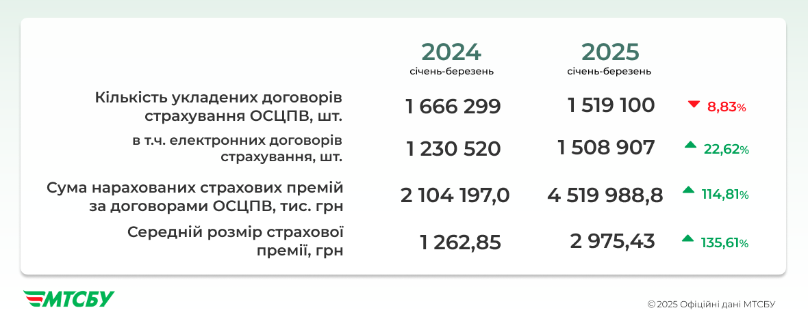

Цифрова Революція на Ринку Автоцивілки: Підсумки I Кварталу 2025 Року
auto ins, автоинс, аутоинс, ауто инс, autoins, автоинс, авто инс, автоінс, авто інс, ауто інс,
Український ринок обов'язкового страхування цивільно-правової відповідальності (ОСЦПВ), або автоцивілки, переживає значні зміни. У першому кварталі 2025 року було укладено понад 1,5 мільйона внутрішніх договорів, що на 8,83% менше, ніж за аналогічний період 2024 року. Попри незначне зниження кількості договорів, ринок демонструє стрімку цифровізацію, що кардинально змінює правила гри.
Електронний Поліс ОСЦПВ: Новий Стандарт та Гарантія Прозорості
Згідно з оновленими законодавчими вимогами, до 2026 року всі страхові компанії в Україні повинні повністю перейти на електронну форму укладання договорів ОСЦПВ. Цей перехід відбувається прискореними темпами: у січні-березні 2025 року 99,3% договорів були оформлені в цифровому форматі. Для порівняння, у першому кварталі 2024 року ця частка становила лише 73,8%.
Такий високий показник цифровізації зумовлений не лише нормативними вимогами, а й змінами в самій процедурі укладання договору. Сьогодні страховик зобов'язаний негайно внести відомості про поліс до Єдиної централізованої бази даних МТСБУ в момент його укладання. Лише після цього клієнт отримує страховий поліс. Ця інновація значно підвищує прозорість ринку та ефективно унеможливлює появу фальсифікованих договорів, захищаючи інтереси як страховиків, так і автовласників.
Справедливе Ціноутворення та Персоналізований Підхід: Бачення МТСБУ
За словами Генерального директора МТСБУ, Олександра Берназюка, перший квартал 2025 року став підтвердженням успішної адаптації ринку автоцивілки до нових правил, визначених Законом №3720. Він наголошує на "безпрецедентному рівні цифровізації", що є "якісним стрибком у напрямку прозорості, зручності для споживача та підвищення довіри до системи страхового захисту".
Ключовим кроком до справедливого страхування, зазначає Берназюк, стало впровадження вільного ціноутворення. Нова модель дозволяє страховикам формувати страхові премії, які реально відповідають рівню ризику та розміру можливих збитків. Це забезпечує повноцінний захист для водіїв і гарантує своєчасні компенсації у разі ДТП.
У перспективі, розвиток ринку сприятиме ще більш персоналізованому підходу до ціноутворення, що створить вигідні та привабливі умови для відповідальних автовласників. МТСБУ продовжуватиме підтримувати перехід на нову якість страхового сервісу, що базуватиметься на стабільності, прозорості та справедливості для всіх учасників дорожнього руху.
Ці зміни не лише модернізують страхову галузь України, а й створюють міцний фундамент для довіри та ефективності, забезпечуючи надійний захист для кожного українського водія.